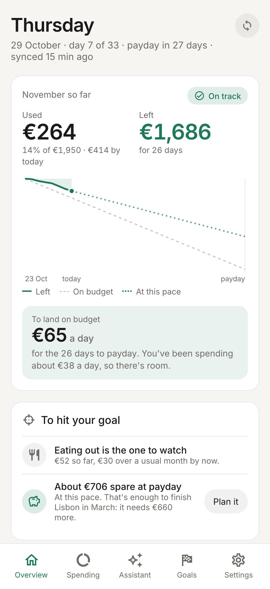
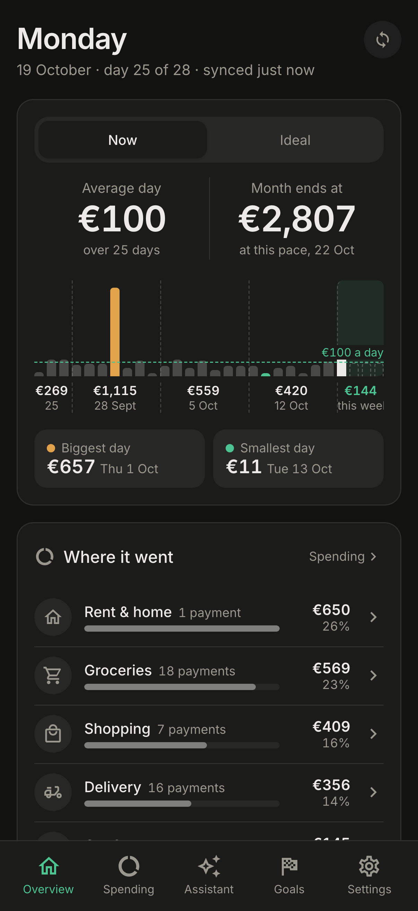
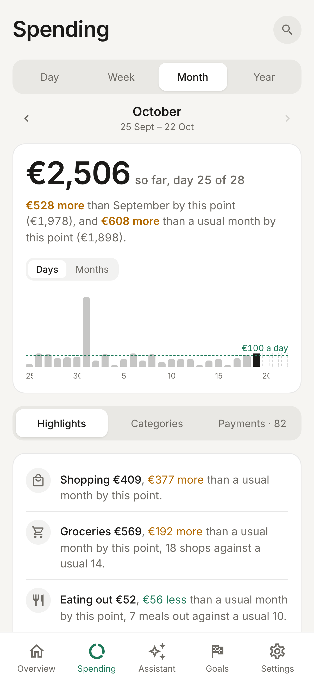
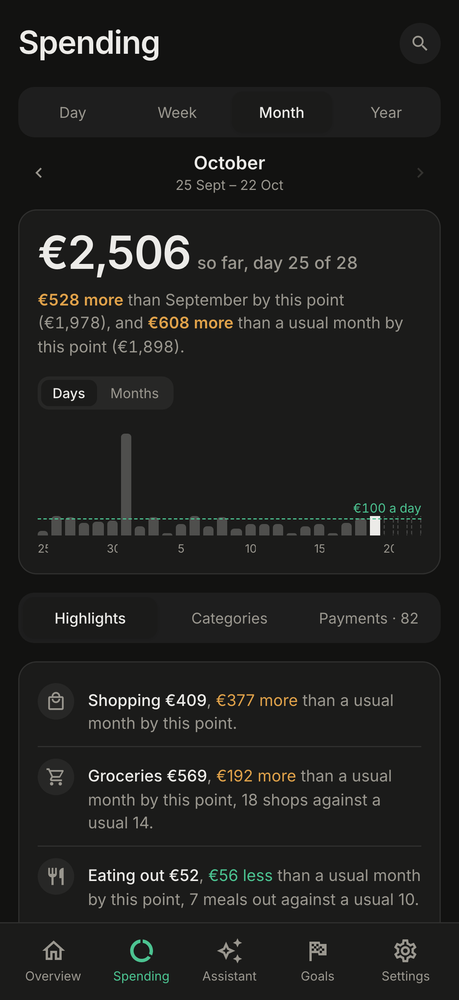
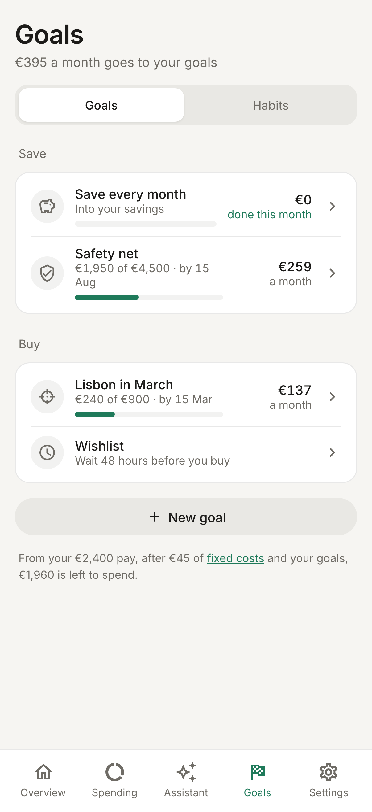
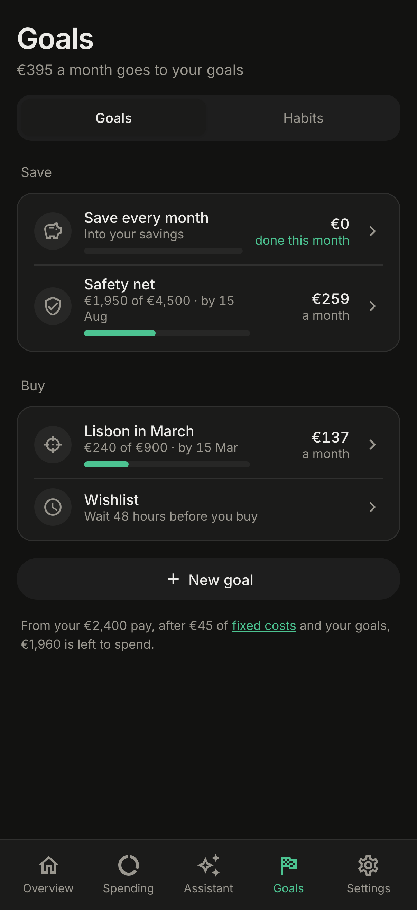

Every bank you use, in one place
ebby is a self-hosted spending app for people who bank in Greece. It brings all your accounts together and shows where the money went this month, and whether the month is on track, before it's over.






Why ebby
Most people spread their money over several banks: a salary account at one, a card at another, Revolut for travel. Each bank's app shows only its own slice. ebby reads them all, sorts every payment into a category, and plans your month around the day you actually get paid.
It runs on your own server, so your bank data stays with you. Friends and family can share one install, and each person sees only their own money.
What you can do
Quick start
Try ebby with six months of made-up spending in a couple of minutes. All you need is Docker.
Run the demo
- Get the code and turn on demo mode
git clone https://github.com/gthanasis/ebby && cd ebby cp .env.example .env && echo DEMO=1 >> .env - Start ebby and its database
docker compose up -d - Fill it with a made-up person's spending
docker compose exec ebby ebby demo-seed - Open
http://localhost:8000On your own machine you're signed in straight away.
The demo person's banks are made up, so nothing syncs and no alerts are sent. Everything else works exactly as it would with real accounts.
Moving to real accounts
A real install needs three things from you: an Enable Banking account to reach your banks, a Google
sign-in client so people can log in, and a few settings in .env.
How ebby works
One idea runs through the whole app: bring every payment into one list, sort it once, and let everything else read from that list.
each with a category"] list --> spending["Spending"] list --> plan["Your plan"] plan --> goals["Goals & habits"] spending --> alerts["Alerts"] plan --> alerts list --> assistant["Assistant"]
1. Your banks come inYou approve ebby once at each bank. After that it fetches your accounts, balances and transactions a few times a day, and again when you open the app. Banks limit how often an app may read your account, and ebby stays within that limit.
2. Every payment gets a categoryEach payment is sorted into one of 23 spending categories, such as Groceries, Eating out or Bills. ebby uses the bank's description, the payee's name and the shop type that card payments carry. Transfers between your own accounts, card repayments, income and investments are kept out of spending, so nothing counts twice.
3. Your month starts on paydayA calendar month rarely matches how money actually flows. ebby measures each month from one payday to the next, and every number in the app, from budgets to "this month", uses that pay month.
4. Everything reads from the same listSpending, the plan, goals, alerts and the assistant all work from that one sorted list. When you move a payment to another category, every screen agrees right away.
Connecting your banks
ebby reaches your banks through Enable Banking, a licensed open-banking service. Each person uses their own Enable Banking application, so no one else's access touches your accounts.
First run
- Add your Enable Banking keyCreate a free application in restricted mode at enablebanking.com,
link your bank accounts to it, and upload its app ID and
.pemkey. ebby checks the key with Enable Banking before saving it, and stores it encrypted. - Pick your banksFrom the list of Greek banks Enable Banking supports.
- Approve each oneOn your bank's own page. The bank sends you back to ebby, which then fetches as much history as the bank allows.
Staying up to date
ebby syncs on its own every six hours. That's about four times a day, roughly what banks allow an app to fetch while you're away. When you open the app it syncs again, at most every fifteen minutes. You can also press sync yourself.
Bank approvals expire after a while. When one does, ebby shows which bank needs reconnecting, so you can approve it again.
Categories & sorting
Every payment gets a category the moment it arrives. You only step in for the ones ebby can't place.
How a payment is sorted
ebby reads keywords in the bank's description, Revolut's own patterns, the payee's name and, for card payments, the shop type (its merchant category code). If none of these settles it, the payment goes to Other and waits for you.
Some money isn't spending: income, transfers between your own accounts, investments and card repayments. ebby keeps these out of your totals. A debit-card payment that a bank reports twice is matched and counted once.
Teaching it
To move a payment, pick its new category. You can move just that one payment, or every payment to the same payee, past and future. ebby re-sorts your history right away, so last month's totals change too.
The Sorter, in the Assistant tab, collects payees left in Other over the last 90 days, biggest first. You can clear them in a few taps. With the assistant switched on, each one comes with a guess and the reason for it.
Money you send to people sometimes names them only by a number: an IRIS payment shows the phone number it went to. Tap the pencil beside the payee in your payments and type who it is. Every payment to that number, past and future, then shows the name, with the bank's own text kept underneath. Save it empty to go back to the bank's.
Spending
The Spending tab answers one question for any stretch of time: where did the money go, and is that normal for me?
Compared with usual
Pick a day, week, pay month or year. ebby shows the total, a chart by day, and each category against your usual: the middle value of your earlier periods. While a period is still running, it's compared with the same number of days of earlier periods, so the middle of the month never looks falsely calm.
Up to three highlights point out what stands out. That might be a category that jumped, one big payment, an expensive weekday, or a run of days with no spending.
Services and subscriptions
Payments to the same business are grouped into a service, so card rows with slightly different descriptions read as one name. A service charged in at least three of the last six months is treated as a subscription. ebby shows its monthly and yearly cost and when the next charge is due, and flags the ones whose price varies or that seem to have stopped.
Cash
ebby sees cash leave the ATM but not where it went. You can tell the assistant what you spent it on, and it's logged in the right category without being counted twice.
Planning around payday
Your plan says how much comes in, how much you keep, and what each category may spend. Then ebby tells you, day by day, whether the month is on track.
Your pay month
Set your payday to the 1st for calendar months, to any day from the 2nd to the 28th, or to the last working day. If payday falls on a weekend, the month starts on the Friday before, because that's when the money usually lands. After your first sync, ebby suggests a payday from your deposits.
Setting the plan
ebby suggests budgets from six months of your real spending. When income runs short, it trims the categories you can most easily cut first. On auto, the budgets follow your income and fixed costs. On custom, they keep the numbers you typed. Greek extra pay, such as the Easter, summer and Christmas bonuses, can be counted in the months it arrives.
Staying on pace
The Today card shows what you've spent today, your daily average, and where the month is heading. Each category gets a pace: fine, ahead or over, with a plain-words line about the habit behind it. The year view puts every month side by side.
Goals, commitments & habits
Three ways to give money a job before it's spent. Each one turns into a weekly or monthly number that ebby checks against your real transactions.
Goals
Say what you're saving for and by when. ebby works out how much that needs each week or month, and suggests cuts based on your last three months. Until you have savings set aside, it suggests a safety net first.
Commitments
Commitments are costs you've promised in advance, kept apart from everyday spending. A commitment can be a monthly limit on certain payees, or a cost that comes every 3, 6 or 12 months. For those, ebby sets aside a monthly share, so the insurance bill doesn't wreck the month it arrives in.
Habits
Weekly habit rules come in four kinds: fewer visits, spend less, no-spend days, and wait before a big buy. Each one keeps a streak and shows the money saved against how you spent before.
Around them sit a few small tools: pay yourself first, no-spend days, yearly costs set aside each month, and the 48-hour wishlist. Add something you want, and two days later ebby asks if you still want it. You answer bought, skipped, or "make it a goal".
Alerts
A short note on your phone while there's still time to change course, not a report after the fact.
When ebby writes
Nothing is sent between 22:00 and 09:00; alerts wait until morning. Turn alerts on in Settings and allow notifications.
On iPhone, notifications work only once ebby is added to your home screen (Share → Add to Home Screen). Use "Send a test" in Settings to check that they arrive.
The assistant
An optional layer, powered by Claude, that reads your spending and can make changes for you, always with your OK.
Chat
Ask in plain words: "how much did we spend on delivery since payday?" or "what changed this month?" The assistant looks up your payments, totals and plan to answer. When it suggests a change, like moving a payment, setting a budget or adding a goal, the change waits for you to tap Do it.
Guesses, explanations and the weekly read
Allowance
People who use the owner's key get a monthly allowance, which the owner sets for each person. People with their own key, and admins, have no limit.
People & privacy
One install, several people, and each person's money stays theirs.
Inviting people
The install owner invites people by email from Settings → People. They sign in with Google, set up their own Enable Banking application, and connect their own banks. The owner can turn anyone off at any time, and that signs them out at once.
Who sees what
Each person sees only their own accounts, payments, plan and goals, and that includes the owner. The separation isn't a filter in the app's code: the database enforces it on every row, so a mistake in a screen can't show one person another's data.
Bank and AI keys are encrypted before they're stored. Your bank data never leaves your server, except when you use the assistant: then the parts of your spending it needs to answer are sent to Anthropic.
Running it for real
ebby ships as one Docker image next to Postgres. A real install takes about fifteen minutes, most of it spent in other services' consoles.
Set up
- Enable BankingMake a free account at enablebanking.com and create an application in restricted
mode. Add
https://<your address>/eb-callbackas a redirect URL and download its.pemkey. Everyone you invite does this step for themselves. - Google sign-inCreate an OAuth client (Web application) with
https://<your address>/auth/callbackas a redirect URI. - SettingsRun
cp .env.example .envand fill it in. Each line says what it's for. - StartRun
docker compose up -d, open your address and sign in with theADMIN_EMAILaccount. The app walks you through the rest.
The settings that matter
PUBLIC_URLWhere people reach the app.ADMIN_EMAILThe Google account that becomes the owner on first start.GOOGLE_CLIENT_ID · GOOGLE_CLIENT_SECRETSign-in. For a private, single-person install, APP_PASSWORD can stand in for them.SESSION_SECRET · CREDENTIALS_KEYThe second one encrypts everyone's keys. Back it up: without it they can't be read again.ANTHROPIC_API_KEYOptional. Turns the assistant on for everyone.ebby checks every setting when it starts. If something is wrong, it refuses to run and names each problem.
Updating
docker compose pull && docker compose up -d
Your install follows one major version (the :0 tag in
compose.yaml), so updates never need anything from you. A new major version arrives only when you change
that number, and its release notes say what to do first.
How ebby is built
One small TypeScript server, one Postgres database, and a web app that installs on your phone. The design is deliberately plain, so one person can run it and understand all of it.
on your phone"] -->|HTTPS| api["ebby server
API · web app · background round"] api --> pg[("Postgres
fenced per person")] api --> eb["Enable Banking
your banks"] api --> google["Google
sign-in"] api -.-> claude["Anthropic
optional"]
Three pieces
Why so few pieces
A spending app for a household doesn't need queues, caches or a fleet of services, and every extra piece is one more thing to keep running. The few hard problems, like privacy between people, staying in sync across copies of the server, and numbers that never drift, are solved inside Postgres and the server. The rest of this section explains how.
The modules
The server is organised by what each part does for you, not by technical layer. Each module is a folder with its own routes, logic and queries.
Arrows point from a module to the ones it relies on. Everything rests on the platform core. The ledger relies on nothing else, so the modules above it can grow without disturbing it.
Platform core
This is the part you never see. It starts the server, checks every setting before serving anything, opens each request as the person who made it, and keeps keys encrypted. It also owns the clock, so every "today" in the app means the same thing, and tests can pin it.
Identity & people
Handles Google sign-in, sessions, the list of people allowed in, and each person's settings. It decides who a request belongs to, and the platform core then makes sure that person sees only their own rows.
Bank sync
Talks to Enable Banking: storing each person's key, the bank approval flow, and fetching accounts and transactions on schedule. It turns each bank's rows into ebby's own shape, and gives every payment a stable id, so syncing twice never stores a payment twice.
Ledger & categories
The one list of payments, accounts and sorting rules, plus the category definitions and shop-type codes. It also defines what counts as spending, so every screen adds up the same way.
Spending
Builds the views of where money went: totals and comparisons with usual for any period, services, subscriptions, cash and the open questions for the Sorter.
Planning
The pay calendar, the plan and budgets, the Today card, pace, the year view, payday detection, savings accounts and extra pay. Every request runs inside the person's own pay calendar, read fresh each time.
Goals, commitments & habits
Saving goals, promised costs, weekly habit rules, the wishlist and yearly costs. Each turns an intention into a number and checks it against real payments.
Alerts
Decides when something is worth a notification, remembers what was already sent, keeps quiet hours, and delivers through web push to each of your devices.
Assistant
The Claude chat with its read tools and confirmable actions, the Sorter's guesses, explanations, the weekly read, and the per-person AI allowance.
Web app
Five tabs: Overview, Spending, Assistant, Goals and Settings. It has one API client, one set of design tokens for light and dark, and a service worker for offline start and push.
Design principles
A handful of rules shape every part of the code. They're why ebby stays small and stays correct.
Privacy lives in the databaseEvery table that holds someone's data is fenced by Postgres row-level security. The server opens each request as the signed-in person, and the database returns only their rows. If a screen has a bug, it still can't show anyone else's money. Tests check this on every change.
Many copies, one truthYou can run more than one copy of the server behind a load balancer. Nothing that must agree everywhere lives in one copy's memory. Settings and keys live in the database or the environment, and "only one at a time" jobs, like the background round, take a lock in Postgres.
Numbers that never driftebby began as a Python app. Money is rounded exactly as Python rounds it, and payment ids are built the same way, so an upgrade never changes last year's totals or stores a payment twice. Every screen's data is compared, number for number, with a saved copy before any change ships.
Time is one thingAnything that asks "what day is it?" asks one clock, in your time zone. That's how a pay month ends at the same moment everywhere in the app, and how tests can freeze time.
Respect the banksBanks allow about four unattended reads a day. ebby schedules around that limit, and never reads a bank just because a page loaded.
Features are foldersEach feature keeps its HTTP routes, its logic and its queries side by side. A check in CI keeps imports pointing one way, from features down to shared code, never in a circle. So a new screen lands in one place, and an old one can be removed cleanly.
Changes ship one wayDatabase changes only ever add things, so the previous version keeps running during an upgrade. Merged changes are released on their own, as a numbered version and a Docker image. Anything an install would have to act on waits for a new major version.